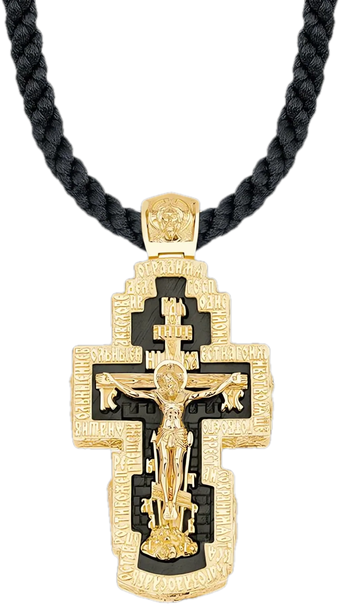

Коллекция 01 / 03
«Ковчег»
Мужская коллекция авторских нательных крестов на шнурах-гайтанах с ликами, молитвами и символами православной веры.
Основной идеей коллекции является оригинальное соединение ценных пород дерева и драгоценных металлов в нательном кресте. С 2013 года данная коллекция является визитной карточкой нашего авторского стиля.
Золотой крест с деревом эбен на шнуре с распятием
Смотреть изделие →